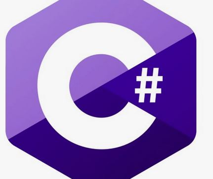

My Skills


Projects
Project 1 : AI Development (planned)
Project 2 : Security Program (planned)
Project 3 : Mobile Application Development (planned)
Project 4 : Homepage Operation (planned)
Project 5 : Music Site (planned)
Desired Job Role
AI Development : 중학생 때부터 관심사였고, 더 나아가 기술이 발전함에 따라 AI 기술도 발전할 텐데 이때 실제로 AI를 제작하는 직업을 가지고 싶습니다.
Security Program : 이것도 AI와 연관이 있는데, AI 관련해서 보안 기술은 특히 민감해질 예정입니다.
보안만 확보 된다면 AI를 다양하게 활용할 수 있기 때문에 보안 프로그램을 직접 개발하고 싶습니다.
보안만 확보 된다면 AI를 다양하게 활용할 수 있기 때문에 보안 프로그램을 직접 개발하고 싶습니다.